integrators
commuting-diagram
commuting-diagram: Commuting Diagram
light: PDF · SVG · PNG 150 · 300 · 600


dark: PDF · SVG · PNG 150 · 300 · 600


omega-orthogonal-projection
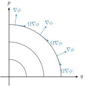
omega-orthogonal-projection: Gradient of the constraint function φ orthogonal and Ω-orthogonal to constant surfaces of φ(q, p) = p − √(p₀² − q²) for p₀ ∈ {1, 2, 3}.
light: PDF · SVG · PNG 150 · 300 · 600


dark: PDF · SVG · PNG 150 · 300 · 600


post-projection
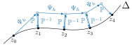
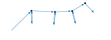
post-projection: Illustration of the post projection method.
light: PDF · SVG · PNG 150 · 300 · 600


dark: PDF · SVG · PNG 150 · 300 · 600


post-projection-unstable
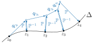
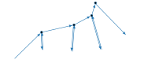
post-projection-unstable: The post projection method with a solution that moves away from the constraint submanifold Δ.
light: PDF · SVG · PNG 150 · 300 · 600


dark: PDF · SVG · PNG 150 · 300 · 600


standard-projection
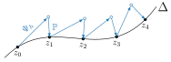
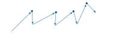
standard-projection: Illustration of the standard projection method
light: PDF · SVG · PNG 150 · 300 · 600


dark: PDF · SVG · PNG 150 · 300 · 600


symmetric-projection-minus
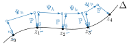
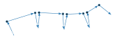
symmetric-projection-minus: Symmetric Projection -
light: PDF · SVG · PNG 150 · 300 · 600


dark: PDF · SVG · PNG 150 · 300 · 600


symmetric-projection-plus
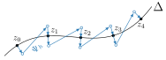
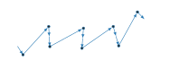
symmetric-projection-plus: Symmetric Projection +
light: PDF · SVG · PNG 150 · 300 · 600


dark: PDF · SVG · PNG 150 · 300 · 600


symplectic-projection-unstable
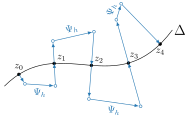
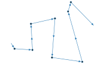
symplectic-projection-unstable: The symplectic projection method with a solution that moves away from the constraint submanifold Δ.
light: PDF · SVG · PNG 150 · 300 · 600


dark: PDF · SVG · PNG 150 · 300 · 600


variation-continuous
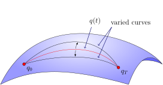
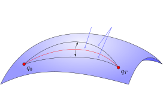
variation-continuous: Variations of the continuous trajectory
light: PDF · SVG · PNG 150 · 300 · 600


dark: PDF · SVG · PNG 150 · 300 · 600


variation-discrete
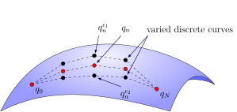
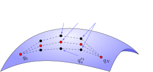
variation-discrete: Variations of the discrete trajectory